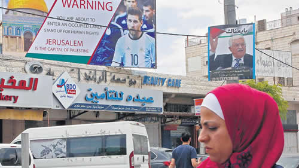

Real Chubut - Agencia de Noticias


La Selección escuchó a Palestina

“Lo correcto era no ir”, manifestó Higuaín resumiendo la posición de los jugadores y el DT. En la práctica, un grupo de personas se manifestó en contra de la realización del partido mostrando camisetas argentinas manchadas con pintura roja. Netanyahu le pidió ayuda a Macri.
Era el partido de la discordia y se suspendió, aunque hasta anoche no se había oficializado la medida. Al menos por parte de la AFA, cuya tesorería cobró por adelantado dos millones de dólares. La única información la brindó la embajada de Israel en Buenos Aires en un breve comunicado donde lamentó comunicar que no se jugaría. Unas horas antes, una ola de repudios se había levantado en Palestina contra la selección nacional. Lionel Messi y sus compañeros quedaron afectados por el temor y la incertidumbre. Una movilización de militantes argentinos y catalanes muy lejos de Medio Oriente, completó el panorama. Los cuestionó ayer durante el entrenamiento matutino en Barcelona. Mostraron camisetas albicelestes manchadas con sangre.
Palestina no quería que se jugara en Jerusalén, lo siente como una provocación. Israel tomaba al encuentro como un evento más por el 70º aniversario de la fundación de su estado. Los cambios de la sede de Haifa a Tel Aviv y de ésta a la ciudad santa terminaron por componer un sainete con connotaciones políticas evidentes. El fútbol quedó tironeado otra vez en el marco de un conflicto que tiene posiciones irreconciliables.
Gonzalo Higuaín expuso el sentimiento del equipo argentino: “Obviamente primero está el sentido común, así que creemos que lo correcto era no ir”. El plantel se negó a viajar desde Barcelona a Jerusalén. Su voluntad fue decisiva para que no se concretara el partido. También el técnico Jorge Sampaoli. Para el plantel en el aspecto deportivo, lejos de sumar, restaba. Algo más de cuatro horas de vuelo, menos tiempos de entrenamiento, riesgo de eventuales lesiones y a eso habría que sumarle la presunta amenaza contra Messi que se atribuyó en medios occidentales al presidente de la Federación Palestina de Fútbol, Jibril Rajou: “Vamos a iniciar una campaña contra la federación argentina, apuntando personalmente a Messi que cuenta con decenas de millones de seguidores en los países árabes y musulmanes”. El dirigente la habría desmentido después.
El amistoso se iba a disputar en el estadio Teddy Kollek de Jerusalén, donde antes se levantaba una aldea palestina. Está enclavado en la parte occidental de la ciudad y ahí juega de local el Beitar Trump Jerusalén, uno de los clubes más populares de Israel. El nombre del presidente de los Estados Unidos se lo agregó su dueño el mes pasado. Lo hizo en reconocimiento al gesto del magnate de trasladar la embajada de EE.UU. a la ciudad que reivindican para sí las tres grandes religiones monoteístas: el judaísmo, cristianismo e islamismo.
Tal era la importancia que tenía el partido para Israel, que el diario local Haaretz -–crítico de las políticas de Benjamín Netanyahu– señaló que el primer ministro “habló con el presidente argentino, Mauricio Macri, el martes por la noche, a petición del ministro de Cultura, Miri Regev, en un intento por evitar la cancelación del juego”. Desde la AFA una fuente le confirmó a PáginaI12 que “el partido no está oficialmente suspendido, a lo sumo postergado y se jugaría más adelante”. La página oficial de la asociación lo confirmaba. Se mantienen la sede, día y horario: Jerusalén, 9 junio, 15.30 de Argentina.
Incluso, anoche circuló la versión de que Netanyahu le habría ofrecido a Macri trasladar el partido a Haifa de nuevo, la ciudad costera que iba a ser el escenario inicial. Pero su presión no surtió efecto. Los jugadores ya habían decidido. Incluso en contra de los intereses comerciales de Messi, quien mantiene un contrato de imagen vigente con una empresa israelí. Se trata de Sirin Labs, de la que se transformó en su embajador en diciembre de 2017. Es una startup de ese país que desarrolla productos electrónicos. En una publicación de Facebook, la compañía detalló: “lo elegimos por su capacidad de llevar el mensaje a un público más amplio”. Moshé Hogeg, el CEO de la sociedad, declaró en aquel momento que había llegado al futbolista por el ex presidente del club Barcelona, Joan Laporta, uno de los asesores de Sirin Labs.
Otra empresa fue la que organizó el partido ahora suspendido. Comtec Group, que entre sus clientes tiene al club Barcelona, tal como indica el escudito blaugrana en su página corporativa. Su dueño se llama Danny Benaim. Un hombre de negocios con llegada a Jorge Messi, el padre del mejor jugador del mundo. De ahora en más restará determinar si estos vínculos comerciales se verán afectados o no.
Las presiones ejercidas para que el amistoso se jugara o se suspendiera – como finalmente sucedió– quedó reflejada en una declaración del embajador palestino en Buenos Aires, Husni Abdel Wahed: “Este partido es como que nosotros celebráramos el aniversario de la ocupación de Malvinas, esto sería una aberración, una falta de respeto y una agresión al sentimiento del pueblo argentino”. Haaretz aportó otro antecedente sobre cómo se movieron las piezas en este ajedrez diplomático: “el jefe de la federación palestina, Jibril Rajoub, le escribió al presidente de la AFA Claudio Tapia la semana pasada acusando a Israel de utilizar el partido como una herramienta política”.
Las protestas en el complejo deportivo del Barcelona fueron las que inclinaron la balanza para el lado palestino. “Messi no vayas”, le pidió a los gritos uno de los militantes movilizados hasta ahí. “No laven la imagen de Israel. Como dijo Maradona, la pelota no se mancha”, se escuchó otra voz por un megáfono. A los pies de los manifestantes había una camiseta argentina manchada con pintura que simulaba ser sangre. Unos días antes, setenta chicos palestinos le habían escrito una carta al jugador del Barcelona pidiéndole “no rompas nuestros corazones”. Le profesaban su admiración y le contaban que el estadio de Jerusalén donde se iba a jugar el partido “está construido sobre nuestra aldea destruida en Al Malha”.
Fuente: Pagina12